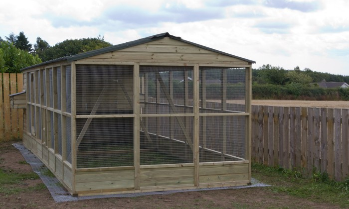
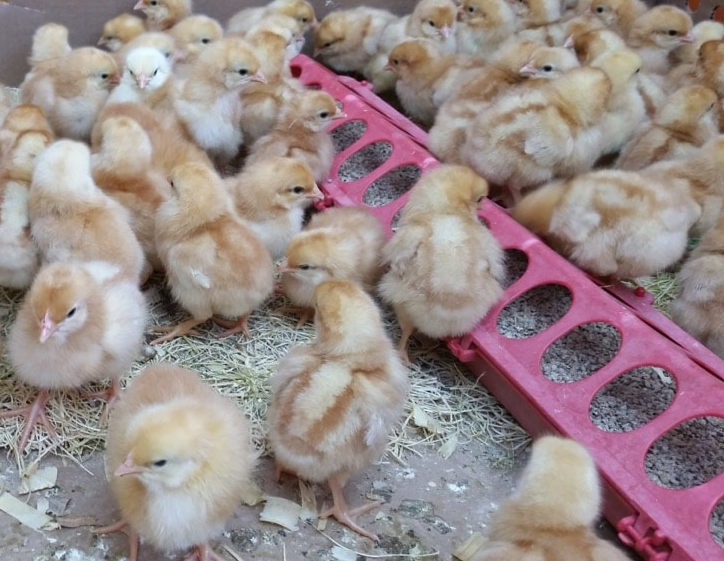
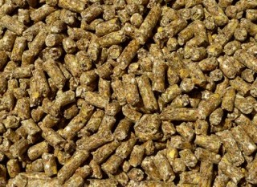

Suitable poultry housing is very important for successful poultry farming business. Poultry birds can be raised in both free range and indoor production systems. Poultry need accurate management and environment for better production and welfare. Whether the poultry is raised in indoor or outdoor system, ensure good management of ventilation, lighting, temperature and litter condition. For sustainable commercial poultry production, planned and proper designed poultry housing is very essential to keep the poultry birds healthy and productive and this will increase the farming production and income.

A good poultry housing system must have to be weather proof; will keep the poultry birds safe from the adverse weather conditions such as cold, rain, wind, hot sun etc. The poultry housing system should have the facilities of providing warmth, particularly during brooding period and cold season. Must have to have the facilities of protecting the poultry birds from harmful predators. Different types of innovative poultry housing design are used in poultry farming business. It may be just a simple house, mobile or portable house or fixed houses with permanent foundation
Success in the poultry farming business mostly depends on feeding quality feed and feed formulation system. For proper growth, egg production and good health. In order to obtain desired growth rate, you must provide highly nutritious poultry feed.
Essential Nutrients: Most of these essential nutrients come from the natural sources. Pasture, grains and seeds, bugs and insects, sunshine, gravel etc. meet up the demands of necessary nutrients.
Water: Lack of adequate supply of pure water can causes different types of problems. It hinders the growth of young poultry birds and also causes early moulting in the laying flock, and directly minimize egg production.
Protein: The most expensive poultry feed element is protein. There are two types of protein source are available. Animal and vegetable protein. Animal protein is a great source of adding required protein in poultry feed.
CarbohydrateCarbohydrate provides energy and is essential for a starved flock. This poultry feed materials can be found in grains and grainy products.
Minerals:
Calcium carbonate (which is present in vitamin D) helps to formulate the egg shell. Calcium and phosphorous make the major part of poultry bird’s bone. But excess amount of phosphorous in poultry feed lead to crooked bones and slipped tendons in chickens and poultry birds.
Vitamin
Vitamin A: comes from green feed ingredients, yellow corn and fish oils. It is essential to protests the poultry birds against colds and infections.
Vitamin D: help to prevent leg weakness and rickets. It is found in synthetic products and also available in sea fishes. Vitamin D is a must added elements in poultry feed.
Vitamin B Complex: is available in milk, green feed, liver, synthetic riboflavin etc. It helps to increase the growth of poultry and chickens. It also helps to prevent curled-toe paralysis in young chickens. While preparing poultry feed, you must have to be careful about adding adequate amount of Vitamin B Complex in the poultry feed mixture.

Poultry Feed Ingredients
Wheat: is one of the best grains as poultry feed ingredients.You can also use wheat as a poultry feed ingredient throughout the year.
Barley: contains more fiber than wheat and oats and a great source of fat. You can feed barley to your poultry birds, when oats and wheat are not available (or in poor quality).
Corn: You can feed whole, cracked or by grinding. You can feed the ripe corn to your hens. But feed the shelled corn with other grains as an scratch feed.
Millet: You can use millet in growing, laying and fattening ration. Millet is easily digestible and help to increase body temperature.
Rye: Rye is not so palatable poultry feed, so feed rye to your poultry birds in small amount as a scratch feed with two or more other grains. Huge amount of rye in poultry feed may cause digestive disorder in your birds.
Flax: Flax is suitable for high amount of protein in poultry feed. You can use small amount of flax in the feed mixture.
Skim Milk and Butter Milk: Skim and butter milk are very useful for all kinds of poultry birds. Especially for the growing, young chicks and laying hens. Skim and butter milk play a vital role to get high quality eggs for hatching. And it’s also a reliable source of protein.
Balancers and Concentrates: For preparing the poultry feed, concentrates and balancers are special supplement which are prepared by the commercial poultry feed companies. They are basically fed with home grown chopped grains.
Fish Oil: Fish oil is a dependable source of Vitamin A and D. Mainly it is used in chicken feed and laying hen’s feed. Fish oil is very effective when green pasture and sunlight is not adequate.

Chicken exhibit the same symptoms for different ailments. They chickens can be very, very sick before you notice anything is amiss. Not only do they hide illness, but they often function seemingly fine until they are days away from death. Diseases result from a combination of indirect causes that reduce resistance or predispose an animal to catching a disease, as well as the direct causes that produce the disease. Direct causes can be divided into two main categories, infectious and non-infectious. Some of the non-infectious conditions may result in reduced immune response (e.g. problems with nutrition), or increased contact with infectious organisms (e.g. poor housing and management), and will lead to increased incidences of infectious diseases.
Click image to zoom*.